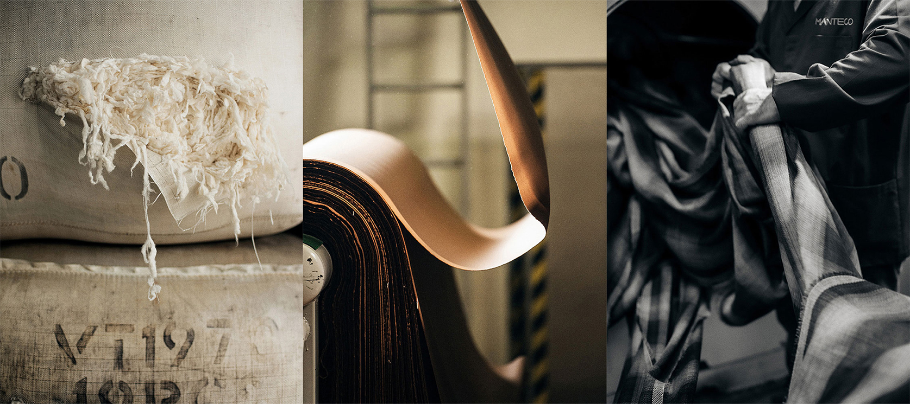

Shopping Cart
-

Leather Phone Pouch
- Size
- no size
- Color
- black
- Order
- one
- Quantity
- 79,000
- Total Product amount
- 79,000
- Shipping Fee
- 0
- TOTAL AMOUNT DUE
- 79,000
Your cart is empty
Your cart is empty
Manteco Archives in Prato, Italy Manteco, which manufactures innovative materials of high quality, redefines the future of the textile industry through long-standing collaboration with COS.
During the war in 1941, Europe's textile production rate was at its lowest. But in a small town in northern Italy , Enzo Anacleto Mantellassi took over a war-bombed spinning mill and started producing recycled wool yarn from old military uniforms and fabrics. At the time, Enzo was unexpectedly changing the way textiles were made for the better.
As of 2021, Manteco is managed by Enzo's son Frank Mantellassi and grandchildren Matteo and Marco, and has become known worldwide for its sustainable production methods and high-quality fabrics. CEO Marco Mantellasi shared the secret to its success:'I think the secret to success is maintaining a family business. I tried to find common ground with the current situation of the company while maintaining my grandfather's philosophy and values.'
Manteco fabrics are of high quality and sustainableBecause it was built on the basis of COS, COS has maintained a long-term collaboration relationship since 2007, when the brand was launched. In addition, sustainability is added to Manteco's goal of producing high-quality fabrics, reducing the burden on the environment and expanding the limits of production methods. Marco describes the collaboration relationship with COS as follows. 'Collaboration is more than just a business partner. We are working together to develop the brand. Through continuous investment and research on fabrics, we were able to stay ahead of the times. This allows us to produce locally produced high-quality, sustainable and recyclable fabrics.'
With the goal of becoming a 100% eco-friendly brand, COS has switched 86% to sustainable materials by 2021, and has invested in four innovative fabrics manufactured by Manteco for the Fall/Winter 2021 collection. Each fabric is sustainably crafted, and you can read more about it in our interview with Marco Manterrasi.
The secret of success 'The pursuit of better growth is our company's vision. With the materials, design and production teams, I keep coming up with ideas and trying to develop them.'
'The secret to our success is that we have built a solid supply chain for a long time. I grew up with factories and artisans in the Prato area near Florence. Making fabrics in Italy is special. Because we have focused on making the best fabrics for a long time, and as a result, the know-how has been accumulated and passed down to the present generation. That's why today's 'made in Italy' products are of excellent quality. All of our subcontractors are located 10 miles from Manteco's headquarters, and they are visited by representatives every day to check the quality and production process.'
'Our company uses a 360-degree evaluation method. First, make sure that the fabric is recyclable throughout all distribution processes, and then use a fabric such as recycled wool (MWool®). Recycled wool fabric is made using leftover fabric from the production process, and the zero-waste system saves at least 10% of the wool produced each year. What's more, the Recype® process creates a variety of colors without dyeing, and projects 43 and 53 manage the remaining fabric from the production process. Here, projects 43 and 53 refer to programs that can save up to 10% - 20% of fabric in the manufacturing process.'
Pursuing cooperation and innovation with COS 'I'm proud of the long-standing partnership. Through years of collaboration, we have produced better fabrics, and I think it has demonstrated the transparency of corporate management. We showed that we can add special value to our products while enhancing the mutual brand value.'
'After a long study of fabrics and finishes, we were able to present an innovative fabric for the COS 2021 Fall Winter Collection. We used a variety of Italian wool materials, which are of excellent quality and reduce the burden on the environment.'
'As well as being sustainable, Manteco wool has a number of unique properties. For example, boiled wool is characterized by its light weight and a vintage textured finish.'
The goal pursued by Manteco 'The goal is to produce more sustainable fabrics in the future. Manteco is already a well-known textile supplier, but in the future, we want people to see our company as a symbol of quality, sustainability and durability. Through environmental impact assessments and zero-waste production systems and recovery programs, we strive to effectively practice resource recycling, and our ultimate goal is to become a leading manufacturer of high-quality, sustainable fabrics.'